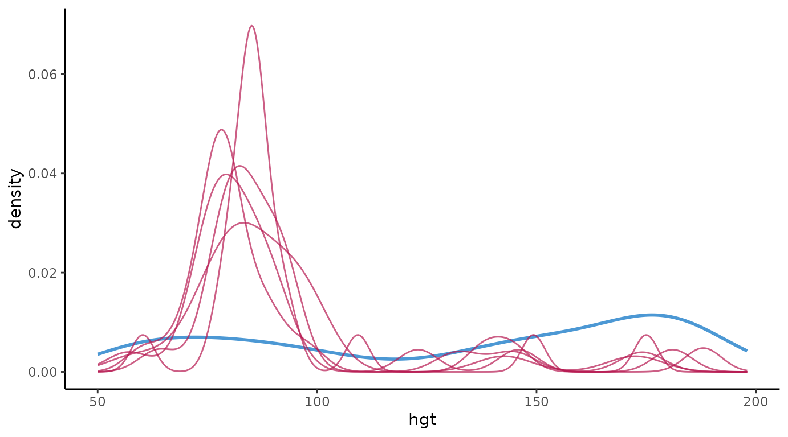
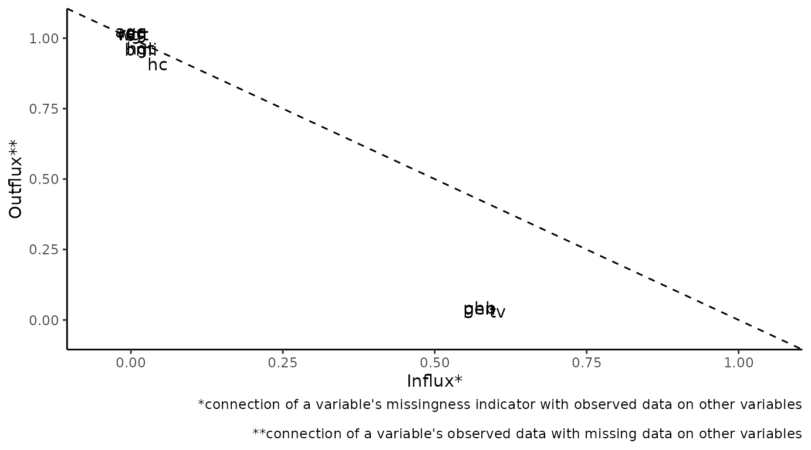
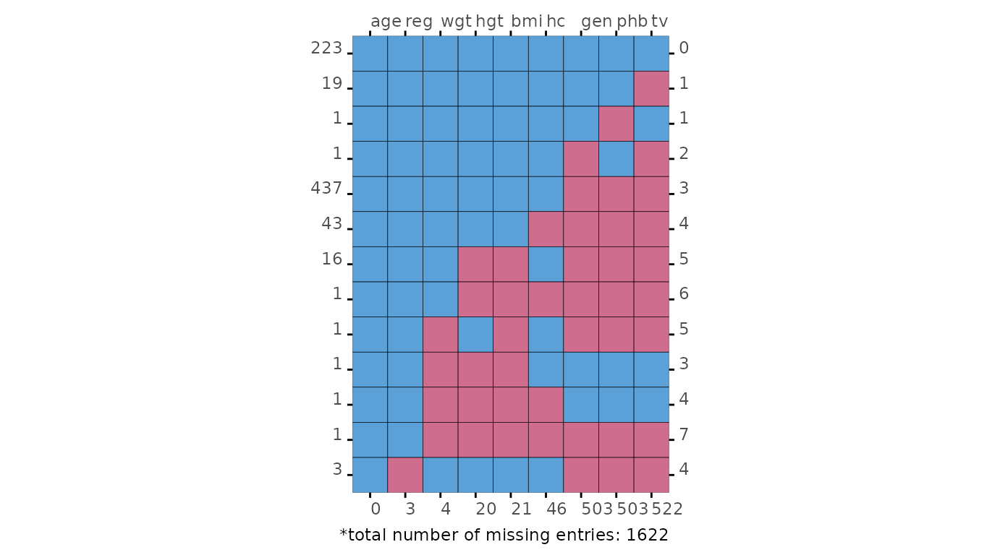
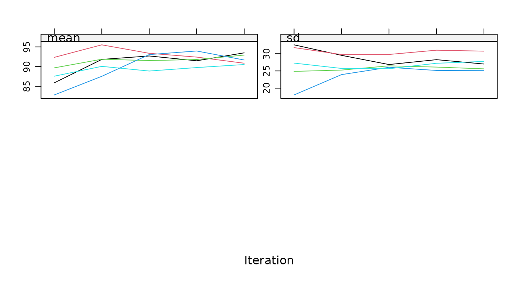
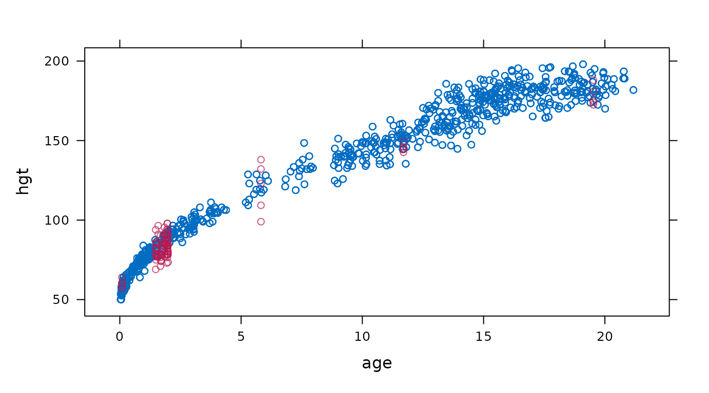
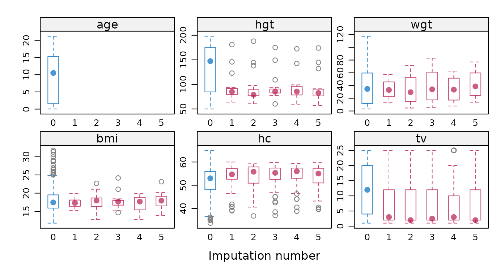
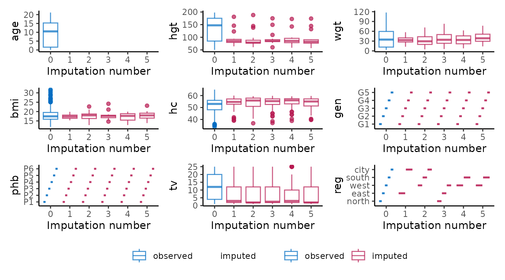

Create the ggmice equivalent of mice
plots
How to re-create the output of the plotting functions from
mice with ggmice. In alphabetical order of the
mice functions.
First load the ggmice, mice, and
ggplot2 packages, some incomplete data and a
mids object into your workspace.
bwplot
Box-and-whisker plot of observed and imputed data.
# original plot
mice::bwplot(imp, hgt ~ .imp)
# ggmice equivalent
ggmice(imp, aes(x = .imp, y = hgt)) +
geom_boxplot() +
labs(x = "Imputation number")
# extended reproduction with ggmice
ggmice(imp, aes(x = .imp, y = hgt)) +
stat_boxplot(geom = "errorbar", linetype = "dashed") +
geom_boxplot(outlier.colour = "grey", outlier.shape = 1) +
labs(x = "Imputation number") +
theme(legend.position = "none")
densityplot
Density plot of observed and imputed data.
# original plot
mice::densityplot(imp, ~hgt)
# ggmice equivalent
ggmice(imp, aes(x = hgt, group = .imp)) +
geom_density()
# extended reproduction with ggmice
ggmice(imp, aes(x = hgt, group = .imp, size = .where)) +
geom_density() +
scale_size_manual(
values = c("observed" = 1, "imputed" = 0.5),
guide = "none"
) +
theme(legend.position = "none")
fluxplot
Influx and outflux plot of multivariate missing data patterns.
# original plot
fluxplot(dat)
# ggmice equivalent
plot_flux(dat)
md.pattern
Missing data pattern plot.
# original plot
md <- md.pattern(dat)
# ggmice equivalent
plot_pattern(dat)
# extended reproduction with ggmice
plot_pattern(dat, square = TRUE) +
theme(
legend.position = "none",
axis.title = element_blank(),
axis.title.x.top = element_blank(),
axis.title.y.right = element_blank()
)
plot.mids
Plot the trace lines of the MICE algorithm.
# original plot
plot(imp, hgt ~ .it | .ms)
# ggmice equivalent
plot_trace(imp, "hgt")
stripplot
Stripplot of observed and imputed data.
# original plot
mice::stripplot(imp, hgt ~ .imp)
# ggmice equivalent
ggmice(imp, aes(x = .imp, y = hgt)) +
geom_jitter(width = 0.25) +
labs(x = "Imputation number")
# extended reproduction with ggmice (not recommended)
ggmice(imp, aes(x = .imp, y = hgt)) +
geom_jitter(
shape = 1,
width = 0.1,
na.rm = TRUE,
data = data.frame(
hgt = dat$hgt,
.imp = factor(rep(1:imp$m, each = nrow(dat))),
.where = "observed"
)
) +
geom_jitter(shape = 1, width = 0.1) +
labs(x = "Imputation number") +
theme(legend.position = "none")
xyplot
Scatterplot of observed and imputed data.
# original plot
mice::xyplot(imp, hgt ~ age)
# ggmice equivalent
ggmice(imp, aes(age, hgt)) +
geom_point()
# extended reproduction with ggmice
ggmice(imp, aes(age, hgt)) +
geom_point(size = 2, shape = 1) +
theme(legend.position = "none")
Extensions
Interactive plots
To make ggmice visualizations interactive, the
plotly package can be used. For example, an interactive
influx and outflux plot may be more legible than a static one.
Plot multiple variables
You may want to create a plot visualizing the imputations of multiple
variables as one object. To visualize multiple variables at once, the
variable names are saved in a vector. This vector is used together with
the functional programming package purrr and visualization
package patchwork to map() over the variables
and subsequently wrap_plots to create a single figure.
# load packages
library(purrr)
library(patchwork)
# create vector with variable names
vrb <- names(dat)Display box-and-whisker plots for all variables.
# original plot
mice::bwplot(imp)
# ggmice equivalent
p <- map(vrb, ~ {
ggmice(imp, aes(x = .imp, y = .data[[.x]])) +
geom_boxplot() +
scale_x_discrete(drop = FALSE) +
labs(x = "Imputation number")
})
wrap_plots(p, guides = "collect") &
theme(legend.position = "bottom")
Display density plots for all variables.
# original plot
mice::densityplot(imp)
# ggmice equivalent
p <- map(vrb, ~ {
ggmice(imp, aes(x = .data[[.x]], group = .imp)) +
geom_density()
})
wrap_plots(p, guides = "collect") &
theme(legend.position = "bottom")Display strip plots for all variables.
# original plot
mice::stripplot(imp)
# ggmice equivalent
p <- map(vrb, ~ {
ggmice(imp, aes(x = .imp, y = .data[[.x]])) +
geom_jitter() +
labs(x = "Imputation number")
})
wrap_plots(p, guides = "collect") &
theme(legend.position = "bottom")
This is the end of the vignette. This document was generated using:
sessionInfo()
#> R version 4.5.1 (2025-06-13)
#> Platform: x86_64-pc-linux-gnu
#> Running under: Ubuntu 24.04.2 LTS
#>
#> Matrix products: default
#> BLAS: /usr/lib/x86_64-linux-gnu/openblas-pthread/libblas.so.3
#> LAPACK: /usr/lib/x86_64-linux-gnu/openblas-pthread/libopenblasp-r0.3.26.so; LAPACK version 3.12.0
#>
#> locale:
#> [1] LC_CTYPE=C.UTF-8 LC_NUMERIC=C LC_TIME=C.UTF-8
#> [4] LC_COLLATE=C.UTF-8 LC_MONETARY=C.UTF-8 LC_MESSAGES=C.UTF-8
#> [7] LC_PAPER=C.UTF-8 LC_NAME=C LC_ADDRESS=C
#> [10] LC_TELEPHONE=C LC_MEASUREMENT=C.UTF-8 LC_IDENTIFICATION=C
#>
#> time zone: UTC
#> tzcode source: system (glibc)
#>
#> attached base packages:
#> [1] stats graphics grDevices utils datasets methods base
#>
#> other attached packages:
#> [1] patchwork_1.3.1 purrr_1.1.0 plotly_4.11.0 ggplot2_3.5.2
#> [5] mice_3.18.0 ggmice_0.1.0.9000
#>
#> loaded via a namespace (and not attached):
#> [1] gtable_0.3.6 shape_1.4.6.1 xfun_0.52 bslib_0.9.0
#> [5] htmlwidgets_1.6.4 lattice_0.22-7 crosstalk_1.2.1 vctrs_0.6.5
#> [9] tools_4.5.1 Rdpack_2.6.4 generics_0.1.4 tibble_3.3.0
#> [13] pan_1.9 pkgconfig_2.0.3 jomo_2.7-6 Matrix_1.7-3
#> [17] data.table_1.17.8 RColorBrewer_1.1-3 desc_1.4.3 lifecycle_1.0.4
#> [21] compiler_4.5.1 farver_2.1.2 stringr_1.5.1 textshaping_1.0.1
#> [25] codetools_0.2-20 htmltools_0.5.8.1 sass_0.4.10 lazyeval_0.2.2
#> [29] yaml_2.3.10 glmnet_4.1-10 pillar_1.11.0 pkgdown_2.1.3
#> [33] nloptr_2.2.1 jquerylib_0.1.4 tidyr_1.3.1 MASS_7.3-65
#> [37] cachem_1.1.0 reformulas_0.4.1 iterators_1.0.14 rpart_4.1.24
#> [41] boot_1.3-31 foreach_1.5.2 mitml_0.4-5 nlme_3.1-168
#> [45] tidyselect_1.2.1 digest_0.6.37 stringi_1.8.7 dplyr_1.1.4
#> [49] labeling_0.4.3 splines_4.5.1 fastmap_1.2.0 grid_4.5.1
#> [53] cli_3.6.5 magrittr_2.0.3 survival_3.8-3 broom_1.0.9
#> [57] withr_3.0.2 scales_1.4.0 backports_1.5.0 httr_1.4.7
#> [61] rmarkdown_2.29 nnet_7.3-20 lme4_1.1-37 ragg_1.4.0
#> [65] evaluate_1.0.4 knitr_1.50 rbibutils_2.3 viridisLite_0.4.2
#> [69] rlang_1.1.6 Rcpp_1.1.0 glue_1.8.0 minqa_1.2.8
#> [73] jsonlite_2.0.0 R6_2.6.1 systemfonts_1.2.3 fs_1.6.6